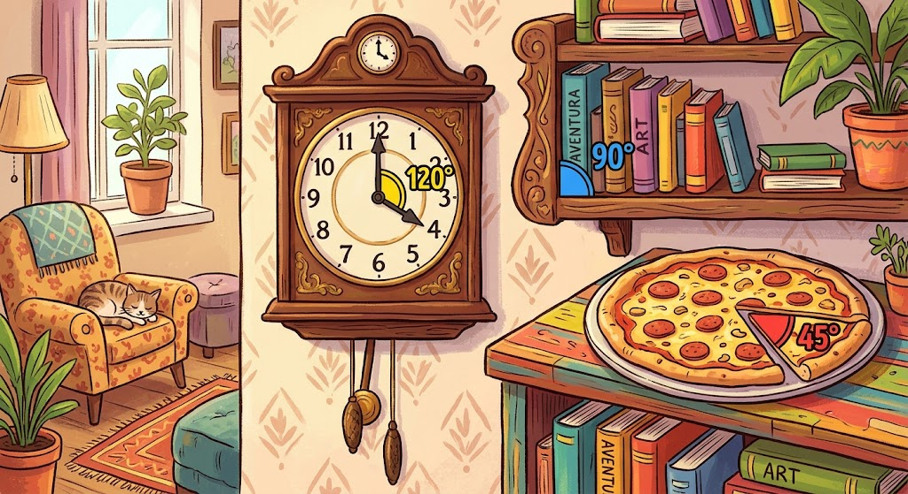

Vamos praticar?
Agora que você já sabe o que é um ângulo e como ele surgiu, que tal provar que eles estão por toda parte?
Os ângulos estão escondidos em todos os lugares: no ponteiro do relógio, na fatia de pizza e na estante de livros, por exemplo!

📸 Missão Prática:
• Pegue seu celular ou câmera.
• Tire uma foto de um objeto do seu dia a dia que forma um ângulo.
• Envie a foto para o Padlet clicando no link abaixo:
Link: Padlet dos Ângulos